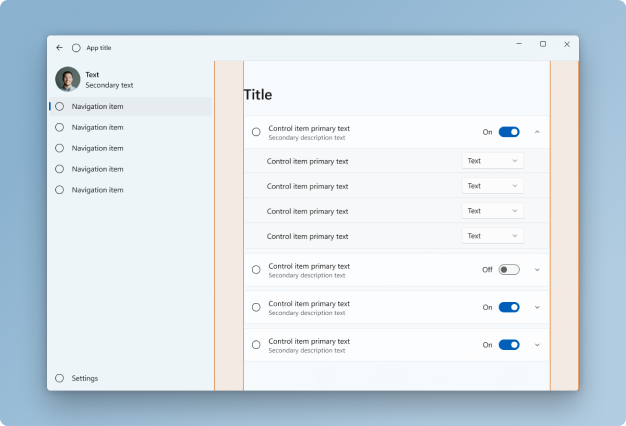
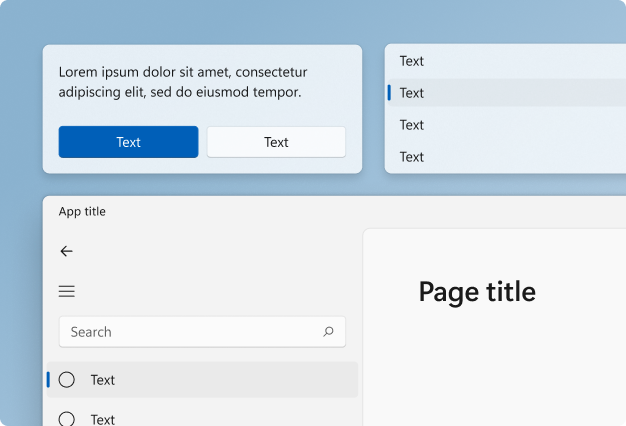
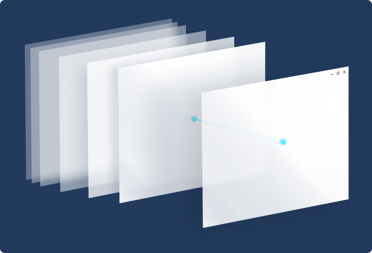
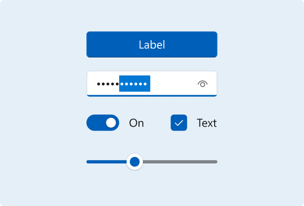
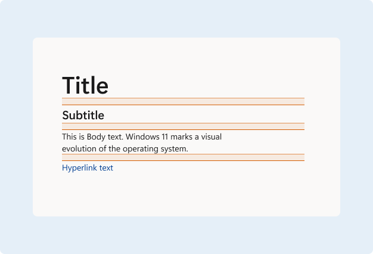

Design basics for Windows apps
Windows design guidance is a resource to help you design and build beautiful, polished apps. It’s not a list of prescriptive rules - it’s a living document, designed to adapt to our evolving design language as well as the needs of our app-building community.
Overview

A high-level look at app patterns commonly used across our in-box applications.

Windows 11 Signature Experiences
See what’s new for Windows 11 design elements.
Basics

Navigation in Windows apps is based on a flexible model of navigation structures, navigation elements, and system-level features. This article introduces you to these components and shows you how to use them together to create a good navigation experience.

Command elements are the interactive UI elements that enable the user to perform actions, such as sending an email, deleting an item, or submitting a form. This article describes the command elements, such as buttons and check boxes, the interactions they support, and the command surfaces (such as command bars and context menus) for hosting them.

This article provides some practical tips and examples to help you design the content of your app: Windows spacing rationale, using the type ramp to demonstrate hierarchy, lists and grids, and how to group controls.